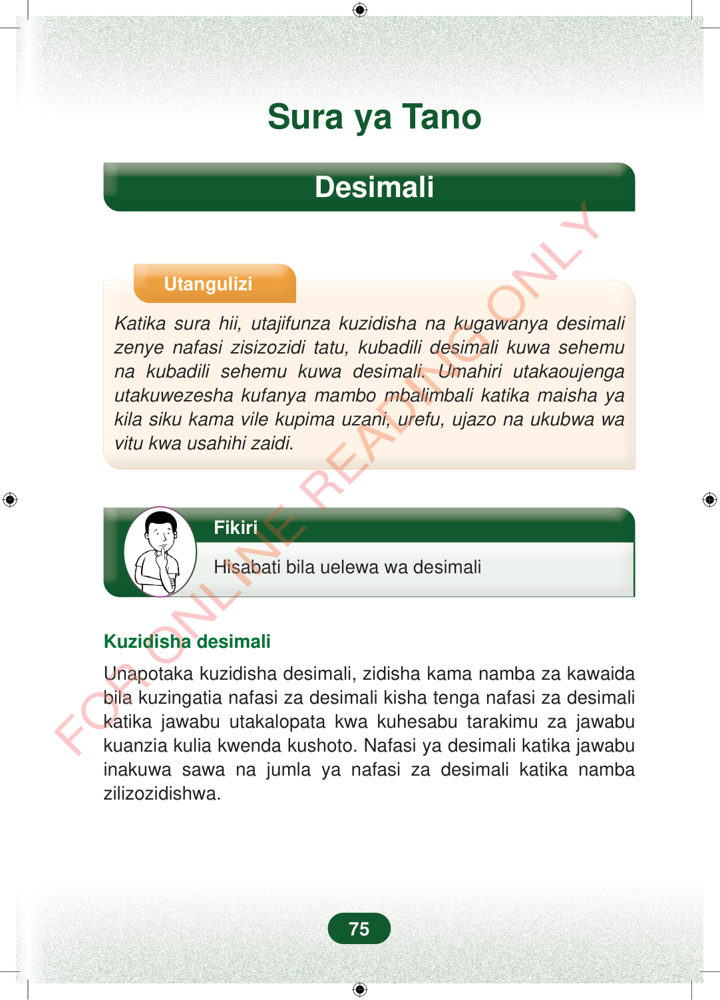

Sura ya TanoDesimaliUtanguliziKatika sura hii, utajifunza kuzidisha na kugawanya desimalizenye nafasi zisizozidi tatu, kubadili desimali kuwa sehemuna kubadili sehemu kuwa desimali. Umahiri utakaoujengautakuwezesha kufanya mambo mbalimbali katika maisha yakila siku kama vile kupima uzani, urefu, ujazo na ukubwa wavitu kwa usahihi zaidi.FikiriHisabati bila uelewa wa desimaliKuzidisha desimaliUnapotaka kuzidisha desimali, zidisha kama namba za kawaidabila kuzingatia nafasi za desimali kisha tenga nafasi za desimalikatika jawabu utakalopata kwa kuhesabu tarakimu za jawabukuanzia kulia kwenda kushoto. Nafasi ya desimali katika jawabuinakuwa sawa na jumla ya nafasi za desimali katika nambazilizozidishwa.75
Sura ya Tano
Desimali
Utangulizi
Katika sura hii, utajifunza kuzidisha na kugawanya desimali zenye nafasi zisizozidi tatu, kubadili desimali kuwa sehemu na kubadili sehemu kuwa desimali. Umahiri utakaoujenga utakuwezesha kufanya mambo mbalimbali katika maisha ya kila siku kama vile kupima uzani, urefu, ujazo na ukubwa wa vitu kwa usahihi zaidi.
Fikiri
Hisabati bila uelewa wa desimali
Kuzidisha desimali
Unapotaka kuzidisha desimali, zidisha kama namba za kawaida bila kuzingatia nafasi za desimali kisha tenga nafasi za desimali katika jawabu utakalopata kwa kuhesabu tarakimu za jawabu kuanzia kulia kwenda kushoto. Nafasi ya desimali katika jawabu inakuwa sawa na jumla ya nafasi za desimali katika namba zilizozidishwa.
75
Sura ya TanoDesimaliUtanguliziKatika sura hii, utajifunza kuzidisha na kugawanya desimali zenye nafasi zisizozidi tatu, kubadili desimali kuwa sehemu na kubadili sehemu kuwa desimali.Umahiri utakaoujenga utakuwezesha kufanya mambo mbalimbali katika maisha ya kila siku kama vile kupima uzani, urefu, ujazo na ukubwa wa vitu kwa usahihi zaidi.Mtoto anafikiri, na pembeni kuna maneno: Fikiri, Hisabati bila uelewa wa desimali.FikiriHisabati bila uelewa wa desimaliKuzidisha desimaliUnapotaka kuzidisha desimali, zidisha kama namba za kawaida bila kuzingatia nafasi za desimali kisha tenga nafasi za desimali katika jawabu utakalopata kwa kuhesabu tarakimu za jawabu kuanzia kulia kwenda kushoto.Nafasi ya desimali katika jawabu inakuwa sawa na jumla ya nafasi za desimali katika namba zilizozidishwa.